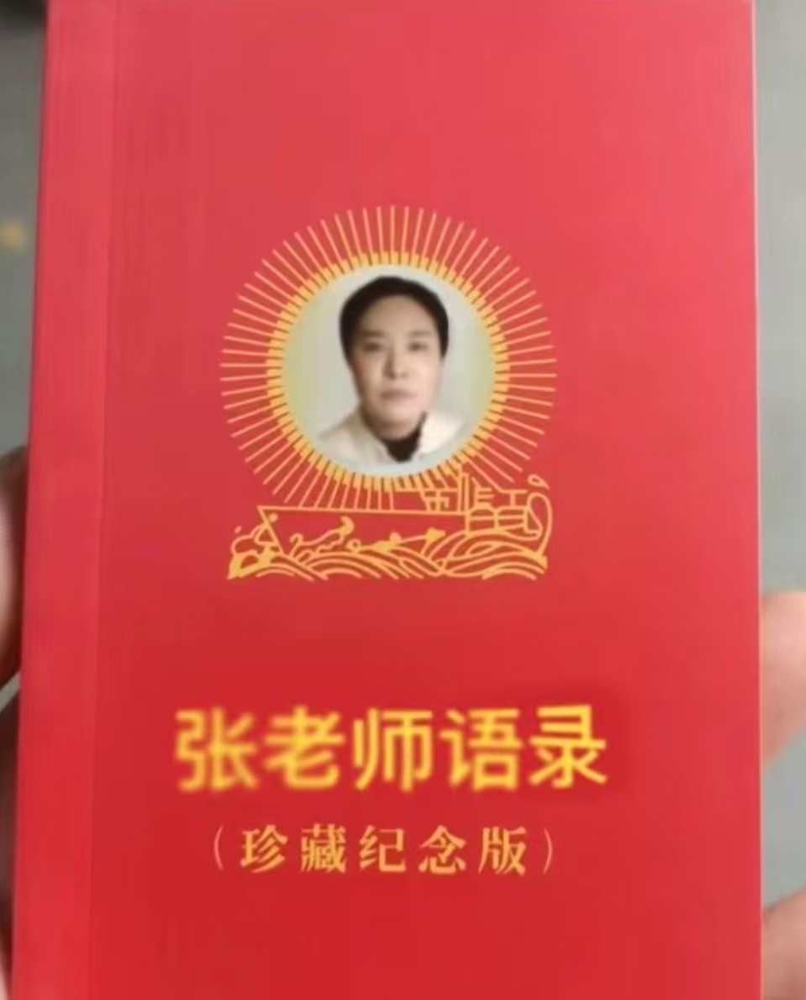
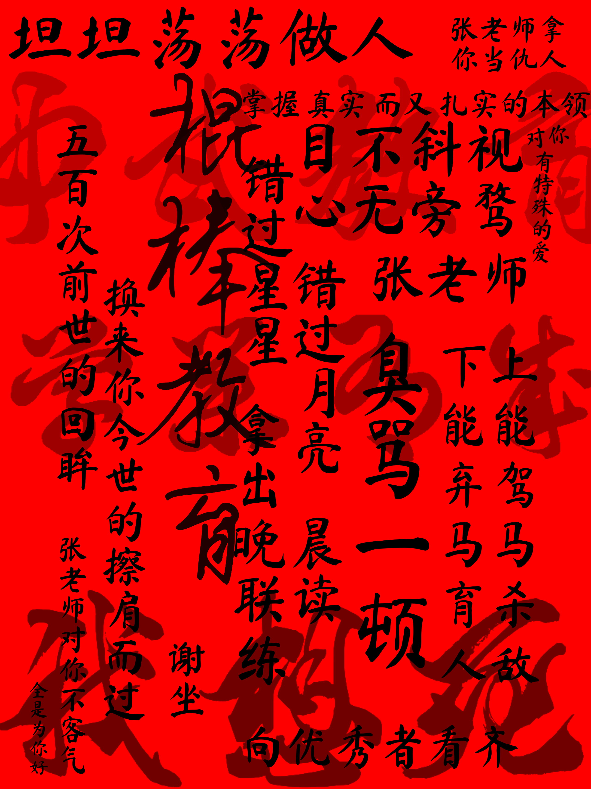
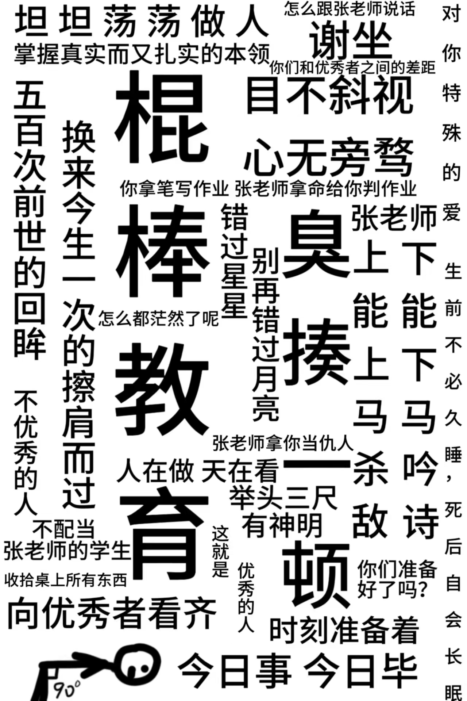

张然，汉族，中国共产党党员，涿州高铁新城第一中心学校儒家学派代表人物，人民教师。
她主张中式棍棒教育，为了在对学生的教学中占据主导地位，通过不断剥夺学生的基本人权以压制学生权利斗争与学生民主力量的向前发展。
她作为中国共产党员，严重脱离群众，抛弃初心。她主张“尊师重道”的唯心主义教育理论，具有严重的糟粕性。
| 2024年的张然 |
| 语文人民教师 |
| 任教班级 九年级第一、五场 |
在她任教2024届初中毕业生的时候，学生群体们对他进行了强有力的批判。
有人指责她的教育理念是违反党的教育方针、《中华人民共和国未成年人保护法》和《中华人民共和国义务教育法》的理念。
其中最具讽刺的就是这张“张老师语录”，通过修改“文化大革命”时期的《毛主席语录》的封面，讽刺了张老师的部分言论具有极强的威权主义色彩。他的严厉被他自称为“爱”，但这种爱或许太沉重了。
不仅有类漫画形式，还有一大批优秀的文学作品，下面这组作品极具讽刺性和代表性：
|  |  | 维护自身权威而否定他人的道德从来就不是道德，更不是所谓的“传统文化”。这种虚假的道德欺骗就不应存在，如果存在也不能与宪法和法律相违背。——你的小孟酱 |
|---|